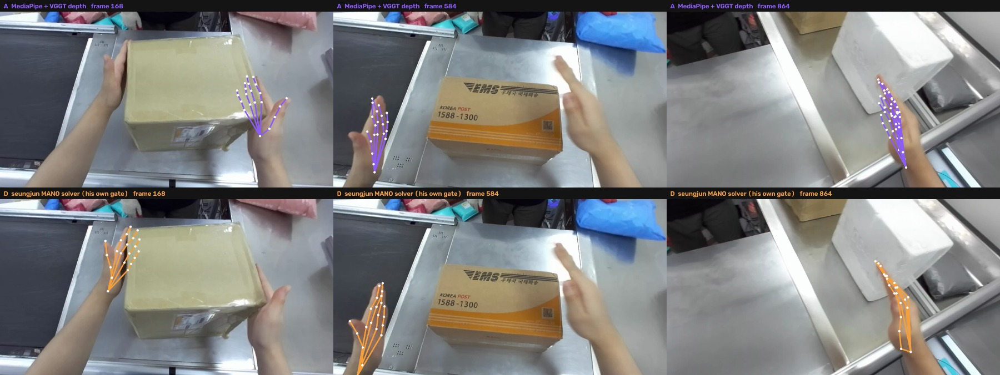
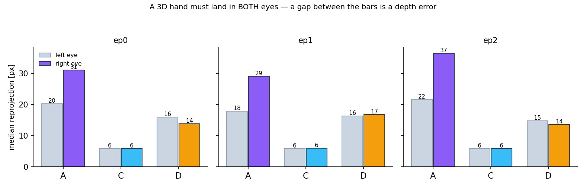
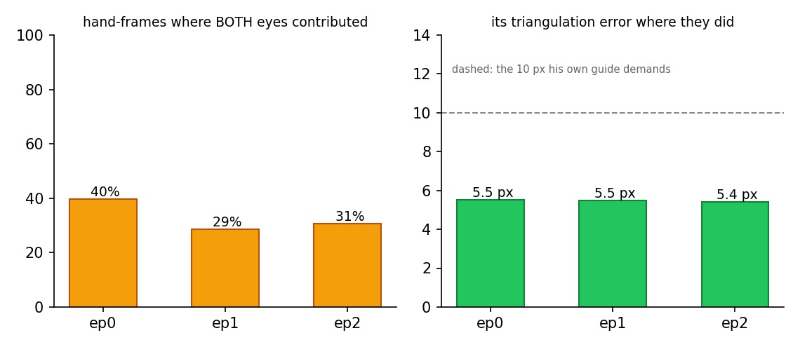
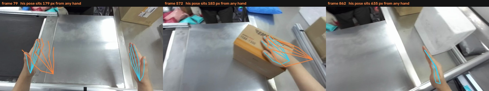

Frontier hands: seungjun's solver, run and adjudicated
BMW & Frontier Demo · his multi-view MANO pipeline on the ego-stereo rig
Lab meeting
2026. 09. 03
Presented by beomjun
Overview
[TL;DR] His solver is the most accurate source, on a third of frames.
- Done: his pipeline ran, three episodes
- Done: both eyes adjudicate every source
- Open: accuracy or coverage — one ruling

both sit on real hands; they disagree on which hand, and on depth — the next slides measure which is right
Method (1): His pipeline, on two eyes
- Two eyes are a calibrated rig
- Left eye is the world frame
- Licence-gated models needed a mirror
| What his loader needs | What the rig gives |
|---|---|
| stereo baseline | 66.4388 mm, per-axis std 5×10⁻⁶ mm |
| relative rotation | 0.7992°, std 1×10⁻⁶ — rigid, all three episodes |
| intrinsics, both eyes | fx 732.96 · fy 736.70 · cx 640 · cy 360 |
| views × frames | 2 × 866 · 1020 · 895 |
| MANO models | mode 700 in his checkout → mirrored tree, our own copies |
| run | job 154938 · 14 min 14 s · rc 0 on all three |
session built to the schema in his own convert_bmw_to_hoi.py — world→view quaternion + mm, dataset-tier intrinsic.yaml
Method (2): Both eyes adjudicate
- Fitted views cannot judge themselves
- Right eye exposes a depth error
- Stereo closes it, so calibration holds

C is triangulated from the two eyes, so its 5.8 px in BOTH eyes certifies the extrinsic and the intrinsics themselves
Results
- His pipeline grades its own work
- accurate where both eyes agree
- ungated, it invents the rest
- Every source, measured
- What the clips look like


poses_m flags nothing absent, so the solver emits a pose for every frame and hand; the validity lives in his triangulation diagnostic
Results
- His pipeline grades its own work
- Every source, measured
- his is the most accurate one
- it is also the sparsest one
- What the clips look like
| source | span | left eye | right eye | on a hand | any-hand frames |
|---|---|---|---|---|---|
| A MediaPipe + VGGT | 8.56 cm | 20.3 px | 31.1 px | 92% | 88% |
| C stereo, 66 mm | 7.51 cm | 5.8 px | 5.8 px | — | 96% |
| D seungjun, gated | 9.44 cm | 16.0 px | 13.8 px | 89% | 61% |
C is not a usable source on its own: independent per-landmark detections give 5.1 mm of depth noise per pixel of disparity error, and its rigid-palm shape residual never falls below 9 mm
Results
- His pipeline grades its own work
- Every source, measured
- What the clips look like
- his hands are fewer, truer
- same scene, same camera, same gate
identical camera, follow box and reach gate; the object clouds are untouched — only the hand source differs
Discussion & Action items
One ruling: switch now, or lift his coverage first.
Discussion:
- Hand source — A dense but depth-biased vs D accurate but sparse → fix D's coverage first, then go all-D (owner rules)
- Why D is sparse — two people in frame break his cross-view hand pairing; our ego-side filter keeps every own hand and 6% of the person opposite (agent, one job)
- MANO models — keep the mirrored tree, or ask for group-read on his copies (owner, one minute)
Action items:
- Re-run his pipeline behind the ego filter (agent · one job)
- Rule on the hand source for the training h5 (owner)
- Object extraction ep2–ep19 (agent · still awaiting go)
Re-run + re-measure: 1 job, ~15 min compute, same day as the ruling
Appendix · evidence paths · references · cut list
- Session
- hmd_object_demo/mano_sessions/frontier/ep{0,1,2}/ — cam_0.mp4 (ego-left) · cam_1.mp4 (ego-right) · extrinsic.yaml (world→view, mm) · ../intrinsic.yaml. Extrinsic derived from observation.cam_frame_{left,right}_wrt_base: R_10 = R_RTR_L, t_10 = R_RT(p_L−p_R) → quat wxyz [0.99997568, −0.00520583, 0.00456592, −0.00082914], t [−66.381568, 2.141234, −1.737732] mm.
- Mirror
- hmd_object_demo/mano_mirror/ — real copies of his scripts (PROJ_ROOT resolves from the script path), symlinks for rlwrld_annotation and config/checkpoints, our MANO_{RIGHT,LEFT}.pkl in wilor/mano_data, hamer/_DATA/data/mano and config/mano_models. First attempt (154936) died on PermissionError './mano_data/MANO_RIGHT.pkl' — his copy is mode 700, ours mode 750 and the same size.
- Gate
- processed/hand_detection/ensemble_triangulation_diag.npz — `used` (hand, frame, cam, joint) and `reproj_err`. Keep a hand-frame when BOTH cams contributed and the median error is under 10 px: 38% / 28% / 30% of hand-frames at 5.5 / 5.4 / 5.5 px median (p90 8.0 / 7.2 / 7.4). Ungated, 50% / 40% / 45% of his hands sit >120 px from every detected hand and one reprojects at 2×10⁸ px (near-zero depth).
- Joint order
- his joints_m comes back in the MediaPipe/OpenPose 21 layout, not raw MANO order — its 3D loss target is in that layout. Verified by correlating the per-joint wrist-distance profile against our MediaPipe hands: 0.995 vs 0.439 for raw MANO. Reading MANO's index 4 as the middle MCP reports a "12 cm hand" for both his solver and HaWoR; both are really 9.4 and 9.2 cm.
- Slots
- diag `mano_sides` = ['right', 'left'] confirms his index 0 = right, so our slot 0 (left) takes his index 1 — the swap is from his metadata, not inferred.
- Losses
- final kpt_3d dominates kpt_2d everywhere (ep0 2.29 vs 0.13, ep1 1.30 vs 0.13, ep2 22986.8 vs 0.04). The ep2 blow-up is outliers in the triangulated target, not the fit — gated, ep2's output is the most two-eye consistent of the three (14.8 / 13.6 px).
- Two-eye test
- viz/two_eye_check.py — project each 3D hand into the left eye, pair to the nearest stereo-matched detection, then project through R_10/t_10 into the right eye. A ep0/1/2: 20.3/31.1 · 17.9/29.0 · 21.5/36.5 px (asymmetric = depth too far; predicted disparity 103.8 vs 109.1 observed). D gated: 16.0/13.8 · 16.3/16.9 · 14.8/13.6 px.
- Four sources
- coverage, span and wrist-vs-detected-2D for all four, including HaWoR: fig_handsources.jpg
- Option B
- HaWoR span 9.22 cm (not the 12 cm a MANO-ordered index reports) but 150 px from the detected 2D wrist — its placement, not its shape, is what fails. Unchanged from the 09-02 deck.
- Clips
- ep0 two-panel on each source: A · D. Renders: viz/run_mano_render.sh (pull → convert → clips → 3D → figure), viz/mano_hands.py, viz/hands3d_multi.py --hands-suffix.
- Stereo C
- viz/stereo_hands.py — MediaPipe both eyes, epipolar match, DLT. fx cannot be recovered this way: the residual falls monotonically to the sweep floor (8.7 mm at 440 px, 10.8 at 733, 13.0 at 1000) because per-landmark depth noise swamps the shape term. Lateral extent is fx-free and reads 7.5 cm against MediaPipe's 9.2 cm model.
{kind=link}
- His pipeline, unmodified:
scripts/run_standalone_session.py→ hand_detection (YOLO → WiLoR + HaMeR) → generate_kpt3d_auto (ensemble, bbox_track, triangulate) → mano_pose_solver (--optimize_beta) - Previous records: all objects, nearest one · policy rate & SAM 3D
Cut: his monocular path (tools_monocular/02b–02e absent from the readable checkout, though his own guide calls it the only correct path for single-camera sequences) · per-frame extrinsics for a moving head (the hoi schema carries one per session, so his smoothness loss acts in the moving ego frame) · the absolute-scale question (A, C and D span ±12% around 8.5 cm and nothing in the data settles it) · ep2's object cloud (no depth pass yet) · the coverage fix for A (stride 1, conf 0.1: both-hands 44%→52%) · fx from stereo hand shape · the second person's own hands as a training signal.